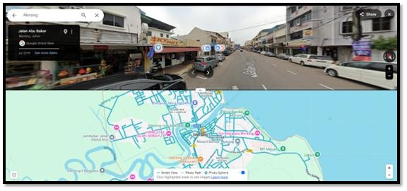
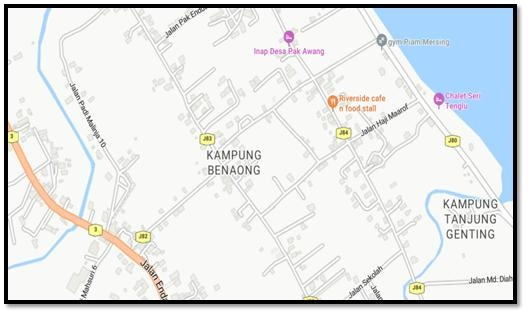

Kampung Benaung
I have lived in Kampung Benaung, Mersing, Johor for 20 years. Mersing is a small town in the northeast of Johor and is the third-largest district in the state. It is the main gateway to beautiful islands like Tioman Island, Rawa Island, and Besar Island. The economy in Mersing mostly depends on tourism, fishing, and farming, which attract both local and international visitors. Kampung Benaung is one of the villages in Mersing. It is about 5.4 kilometers from the town. There is no clear record of when the village was founded, but it may have existed since the British colonial era in the 20th century. The village started to grow more between 1990 and 2000.

